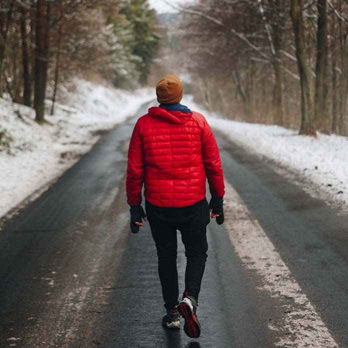

Фритрек и нулевой спринт: Подготовка к работе
</html>

-
Это было самое начало пути. На этом этапе важно было проникнуться основами и настроиться на учёбу. И, возможно, подумать, как новые знания могут повлиять на ваше будущее.
-
С самого начала обучения я был вдохновлен глубиной и широтой предлагаемых материалов, которые позволили мне погрузиться в мир Front-End разработки. Процесс обучения был структурирован таким образом, чтобы помочь мне освоить основы и продвигаться к более сложным темам. Постоянная поддержка преподавателей и однокурсников была неоценимой помощью на этом пути. Благодаря этому опыту я смог оценить, как новые навыки и знания могут трансформировать мою карьеру и перспективы в сфере IT.